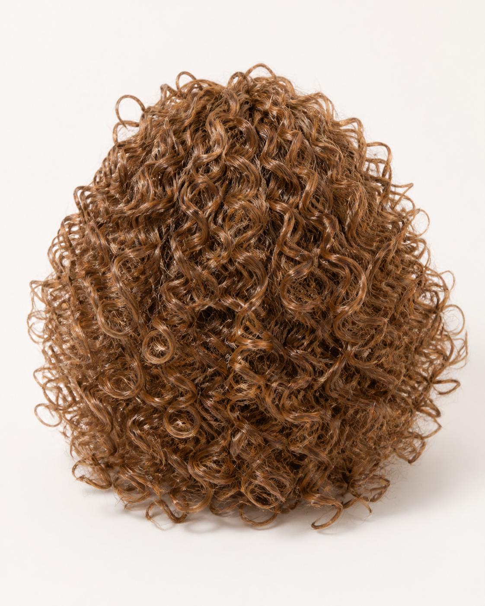
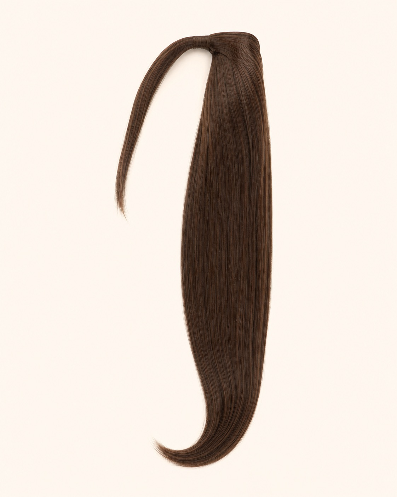

Style brief
Start with wearer, silhouette, length and intended everyday or fashion use.
Synthetic Hair · B2B WHOLESALE
Create a commercially clear synthetic range by defining the wearer, style direction, fibre, construction, colour and channel. Samples help your team evaluate appearance and handling before committing to a broader programme.

AT A GLANCE
SELECTED PRODUCT REFERENCES
Images have passed visual review. Product specifications, availability, MOQ, price and lead time remain subject to written confirmation.

4 APPROVED IMAGES · B2B ENQUIRY
VIEW PRODUCT REFERENCE →
5 APPROVED IMAGES · B2B ENQUIRY
VIEW PRODUCT REFERENCE →
4 APPROVED IMAGES · B2B ENQUIRY
VIEW PRODUCT REFERENCE →
3 APPROVED IMAGES · B2B ENQUIRY
VIEW PRODUCT REFERENCE →
LIMITED IMAGE REFERENCE · B2B ENQUIRY
VIEW PRODUCT REFERENCE →
3 APPROVED IMAGES · B2B ENQUIRY
VIEW PRODUCT REFERENCE →
4 APPROVED IMAGES · B2B ENQUIRY
VIEW PRODUCT REFERENCE →
7 APPROVED IMAGES · B2B ENQUIRY
VIEW PRODUCT REFERENCE →BUYER BRIEF
Final availability, minimum quantities, price and lead time depend on the confirmed product specification.
Start with wearer, silhouette, length and intended everyday or fashion use.
Confirm fibre characteristics and care expectations through the product brief and sample.
Review cap or attachment details, fit, coverage and finishing requirements.
Coordinate colour, packaging and product information across the intended collection.
B2B PROCESS
BUYER QUESTIONS
The sourcing scope includes Synthetic Wigs, Hairpieces (including ponytails), Bangs / Fringes and Clip-in Toppers. Availability is confirmed against the requested style and specification.
Potential colour, label and packaging development can be reviewed for private-label programmes. Commercial terms depend on the final brief.
Send the target market, product reference, expected quantity range and quality position. We will identify the information needed for sampling or quotation.
START WITH YOUR REQUIREMENT
Tell us the product, market and expected quantity. We will identify the next information needed for a useful sourcing discussion.
SEND YOUR BUYING BRIEF